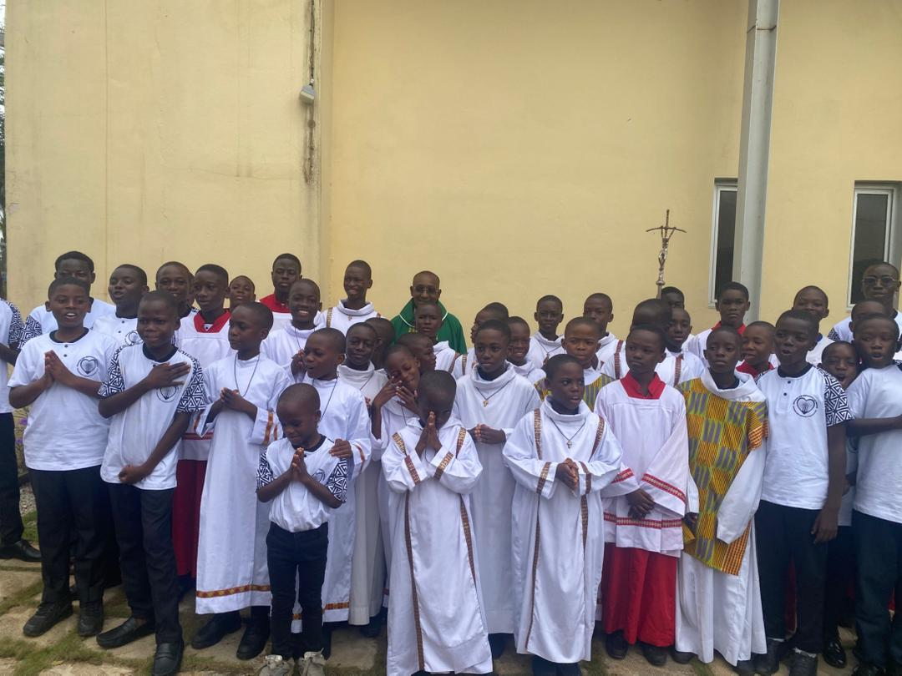

Servir
Participer dignement aux célébrations liturgiques.
Servants de Messe
« Servir et non être servir »
Nous sommes une communauté de jeunes engagés au service de l'autel. Notre mission est d'accompagner la célébration des messes avec foi, discipline et esprit de service.
Découvrir le groupeLes Servants de Messe de Saint-Bernard d'Adiopodoumé sont des jeunes qui mettent leur temps et leurs talents au service de Dieu en participant activement aux célébrations liturgiques. Au-delà du service de l'autel, nous vivons des moments de formation, de fraternité et de partage afin de grandir dans la foi et dans le sens des responsabilités.

Participer dignement aux célébrations liturgiques.
Approfondir notre foi et notre connaissance de la liturgie.
Développer l'entraide, le respect et la fraternité.
Quelques moments partagés avec notre communauté.

Les dernières nouvelles du groupe seront bientôt publiées ici. Revenez régulièrement pour suivre nos activités.
Tu souhaites devenir servant de messe ? Nous serons heureux de t'accueillir et de t'accompagner dans ce service de l'Église.
Nous rejoindre